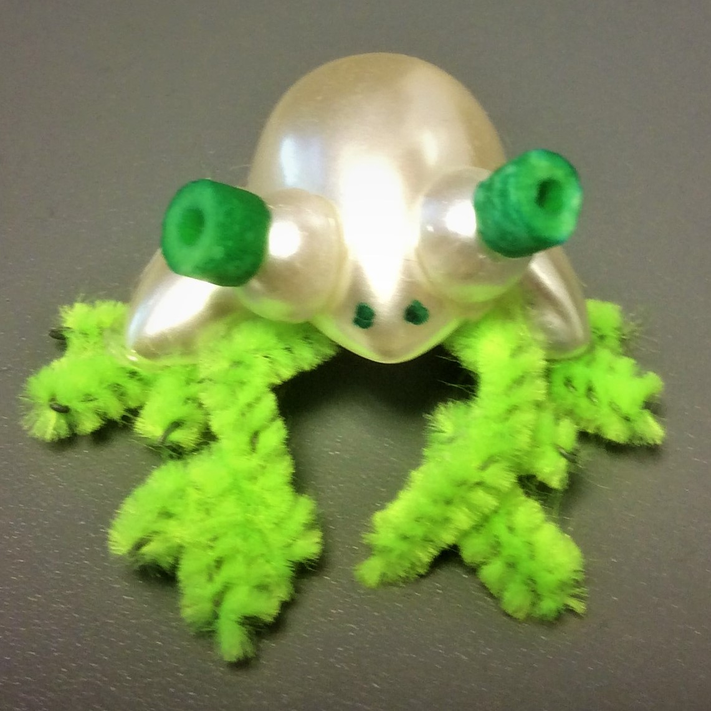
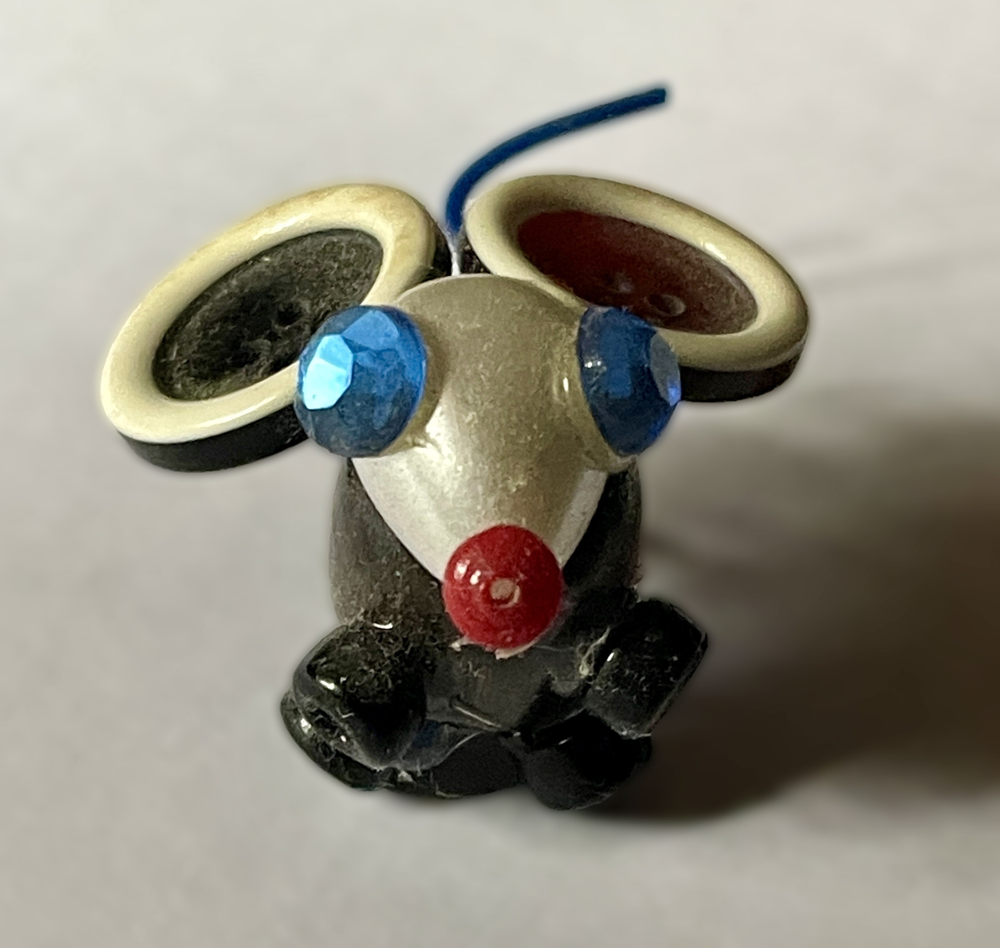

Froggy Joy: How a Pipe Cleaner and a Smile Can Change a Day
Who knew a tiny frog made from pipe-cleaners and spare beads could be a happiness superhero? This little hopper proves you don’t need fancy supplies to

spark joy. It takes just a dash of whimsy! Studies show that handmade gifts trigger a dopamine boost in both the giver and receiver. So yes, this frog isn’t just cute. It’s science backed cheer! Ribbit-tastic, right?
Button Mouse Magic: Small Creations, Big Heart Melts
Meet your new pocket sized pal: a bead bodied, wire tailed mouse ready to scurry straight into someone’s heart! Crafting tiny treasures like this isn’t just fun. It’s a mini mindfulness session. Research says repetitive motions (like threading beads)

reduce stress by 30%. Bonus? This mouse doubles as a stealthy happiness agent leave it on a desk or tuck it in a lunchbox for a surprise serotonin surge!Why Thumb Sized Gifts Are Secretly Life Changing
Big love comes in small packages! These itsy-bitsy critters are instant mood lifters, perfect for strangers, friends, or your own windowsill. (Pro tip: Pair them with a note like "You’re un-frog-ettable!" for extra giggles.) According to psychology, micro-acts of kindness, like gifting a button mouse, creates a ripple effects of goodwill. So go ahead, unleash your inner joy and engineer one tiny creation at a time!
P.S. "The world needs more pocket sized wonders. Be the reason someone finds a surprise smile today!" 🐭💚

Richard Diaz
Every artwork is a happy little puzzle made of three pieces: the subject (what makes you smile), the form (how it dances with color and shape), and the content (the secret hug it wants to give you). Put them together—now you’re not just seeing art, you’re feeling its joy!💛